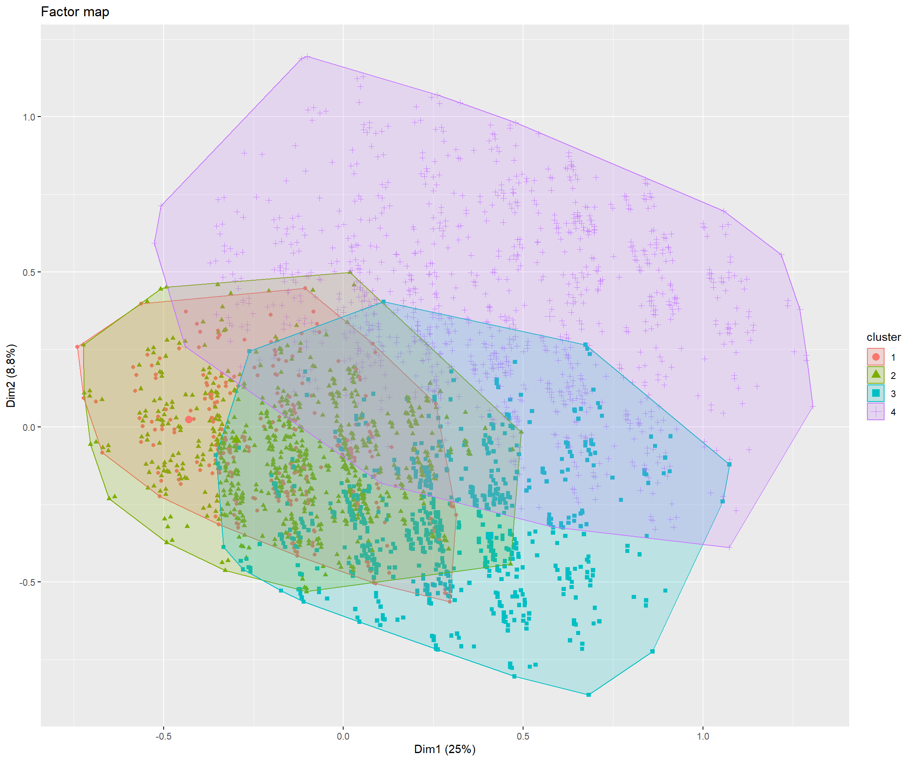

Análisis MCA y HCPC ENUSC
Análisis MCA y HCPC ENUSC
Introducción
Este documento…
Tablas
El cluster 1 se caracteriza por una sobrerepresentación de: Cree que será victima de delito no violento (v_test = ); Dispone de medidas personales (v_test = 36.82) and Muy inseguro/Inseguro en la Casa (v_test = 35.79)
El cluster 2 se caracteriza por una sobrerepresentación de: No dispone de medidas personales (v_test = ); Aumentó delincuencia en Comuna (v_test = 24.72) and Muy inseguro/Inseguro en Recreación (v_test = 22.99)
El cluster 3 se caracteriza por una sobrerepresentación de: Dispone de medidas personales (v_test = ); Aumentó delincuencia en Comuna (v_test = ) and Cree que será victima de delito violento (v_test = )
El cluster 4 se caracteriza por una sobrerepresentación de: Muy seguro/Seguro en el Barrio (v_test = ); No modifica comportamiento en Vida Cotidiana (v_test = 38.13) and Muy seguro/Seguro en Recreación (v_test = 37.49)
El cluster 5 se caracteriza por una sobrerepresentación de: Se mantuvo/Disminuyó delincuencia en Barrio (v_test = ); Se mantuvo/Disminuyó delincuencia en Comuna (v_test = ) and Se mantuvo/Disminuyó delincuencia en País (v_test = )r c5

El cluster 1 se caracteriza por una sobrerepresentación de: Cree que será victima de delito no violento (v_test = ); Dispone de medidas personales (v_test = 36.82) and Muy inseguro/Inseguro en la Casa (v_test = 35.79)
El cluster 2 se caracteriza por una sobrerepresentación de: Aumentó delincuencia en Comuna (v_test = ); Aumentó delincuencia en País (v_test = ) and Cree que será victima de delito violento (v_test = )
El cluster 3 se caracteriza por una sobrerepresentación de: Muy seguro/Seguro en el Barrio (v_test = ); No modifica comportamiento en Vida Cotidiana (v_test = 38.13) and Muy seguro/Seguro en Recreación (v_test = 37.49)
El cluster 4 se caracteriza por una sobrerepresentación de: Se mantuvo/Disminuyó delincuencia en Barrio (v_test = ); Se mantuvo/Disminuyó delincuencia en Comuna (v_test = ) and Se mantuvo/Disminuyó delincuencia en País (v_test = )
El cluster 1 se caracteriza por una sobrerepresentación de: Modifica comportamiento en Transporte (v_test = ); Modifica comportamiento en Vida Cotidiana (v_test = ) and Aumentó delincuencia en Barrio (v_test = )
El cluster 2 se caracteriza por una sobrerepresentación de: Muy seguro/Seguro en el Barrio (v_test = ); No modifica comportamiento en Vida Cotidiana (v_test = 38.13) and Muy seguro/Seguro en Recreación (v_test = 37.49)
El cluster 3 se caracteriza por una sobrerepresentación de: Se mantuvo/Disminuyó delincuencia en Barrio (v_test = ); Se mantuvo/Disminuyó delincuencia en Comuna (v_test = ) and Se mantuvo/Disminuyó delincuencia en País (v_test = )
El cluster 1 se caracteriza por una sobrerepresentación de: Modifica comportamiento en Transporte (v_test = ); Modifica comportamiento en Vida Cotidiana (v_test = ) and Aumentó delincuencia en Barrio (v_test = )
El cluster 2 se caracteriza por una sobrerepresentación de: No modifica comportamiento en Transporte (v_test = ); No modifica comportamiento en Vida Cotidiana (v_test = ) and Se mantuvo/Disminuyó delincuencia en Barrio (v_test = )